Every model in the series is a decoder-only Transformer in the Llama style, built from random initialisation. One blueprint, scaled from 11 million to 100 million parameters, reads Hindi one token at a time and predicts the next.
Read the diagrams bottom to top. Tokens become vectors, pass through a block that is repeated N times, and come out as a score for every one of the 32,000 tokens in the vocabulary.
Each token id becomes a vector of d numbers (256, 512 or 768). Its matrix is shared with the output head.
Rescales each vector before attention and before the feed-forward layer, which keeps training stable.
Each token looks back at earlier tokens. RoPE encodes position, and the causal mask hides the future.
A gated two-path MLP: SiLU(Wgatex) ⊙ Wupx, projected back down by Wdown.
Each sub-layer adds its output to its input, so signals and gradients flow cleanly through deep stacks.
A final RMSNorm, then a linear layer tied to the embedding produces 32,000 next-token probabilities.
These are animated, paper-style figures: (a) the attention heads, (b) the SwiGLU feed-forward, (c) the exact configuration, and for Angad, (d) the fine-tuning loss mask.

Going from Jatayu to Jambavan changes only these numbers. Angad shares Hanuman’s architecture exactly; it differs in its training.
Every query head has its own key/value head. Simple, but at generation time each head stores its own cache.
Twelve query heads share four key/value heads, in groups of three. The KV cache is 3× smaller, so generation is faster with almost no quality loss.